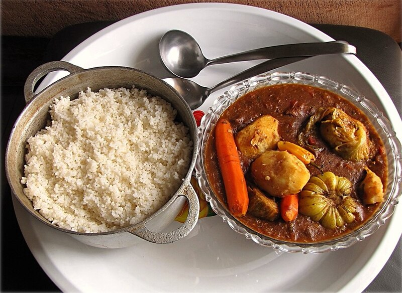

Home
Domoda

Description
Domoda is The Gambia’s national dish—a rich peanut stew made with meat or fish, vegetables, and groundnut paste. It's hearty, comforting, and deeply satisfying.
Ingredients
- 500g beef or chicken
- 1 cup peanut butter
- 2 tomatoes
- 1 onion
- 1 potato
- 1 carrot
- Seasoning cubes
- Salt and pepper
Steps
- Brown meat in a pot and set aside.
- Sauté onions and tomatoes until soft.
- Add peanut butter and water to create a thick sauce.
- Add meat and chopped vegetables.
- Simmer until everything is tender and flavors are well combined.